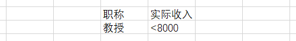

排序 & 筛选
Sort & Select
- . 下载高考成绩、工资收入
- 目的
- . 排序和筛选的使用
- 排序
- . 先看总分再看英语成绩，最后再看语文
-
双击打开，定位鼠标在数据区域内，选择"数据" → "排序"指定主关键字"总分"、降序添加次关键字"英语"、降序添加次关键字"语文"、降序单击"确定"完成排序
- 筛选1
- . 筛选实际收入小于5500的职工
- . 预处理：根据职称，计发相应的岗位津贴 - VLOOKUP
-
定位鼠标在数据区域内，选择"筛选"选择"实际收入"列右侧小箭头，选择"数字筛选"指定条件为"小于"，值为5500并确定
- 筛选2
- . 筛选实际收入小于8000的教授，结果存放在地址B15开始的区域
-
创建条件区域|辅助数据：在数据区域外码合适位置输入"职称"和"实际收入"[和数据字段名相同]，输入"教授"、"<8000"
 辅助数据 筛选数据：鼠标定位在数据区域 "数据" → "排序和筛选" → "高级"，分别指定数据区域、条件区域、结果区域，按"确定"完成筛选 - . 条件变化后，需要重新筛选
- 提交
- . 将处理后的Excel文档以学号+姓名的方式命名，如20231100张树彬，提交到学习通对应的作业
- 考核方式
- . 随堂作业并提交
拓展练习
- . 下载合并计算数据
- 合并计算
- . 统计全年生成总量
-
双击打开，创建新工作表"统计"单击"合并计算"，勾选"首行"、"最左列"；单击"浏览"，框选第一张表的数据，并"添加"依次单击其它工作表，采用默认框选范围并"添加"；注意：不要点击"统计"表所有数据选择完毕后，单击"确定"，在"统计"工作表中给出合并计算后的结果